真ボス「infinity」
出現条件を満たさないと出ない、本作真の最終ボス。特定の攻撃がエグいdis-humanに対し、こちらは満遍なく事故りやすい感じになっています。
プレッシャーに負けず、落ち着いて抜けましょう!
- 本体：60
- パーツ
- クリスタル：5
- リング1：60
- リング2：30
基本的なこと
このボスのみ、ラウンドディバイダーを撃つとカウンターでブラックホール弾を返してきます。
dis-human同様レーザー連射で遅くできますが、最終的に自機へ突っ込んできますので、避けられるスペースをキチンと確保しましょう。
WR-01R/WR-02R
第1形態
通常パターン
このボスも形態移行まで無敵なため、最初の攻撃2セットはやり過ごすしかありません。画面全体を回転しながら極太レーザーでぶった切ってくるため、慣れるまでかなり分からん殺しされると思います。infinityを追いかけるようにこちらも回転し、撃ってくる弾は手前で広い隙間を抜けましょう。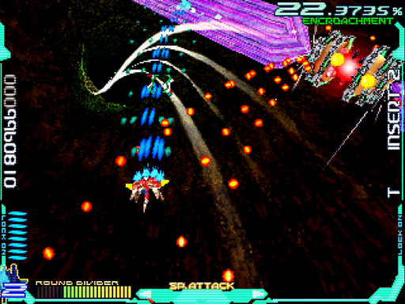
第2波も手前で抜けますが、中々にみっちり詰まっているため厄介です。左からinfinityも轢き殺さんとしてくるため、素早く対処せねばなりません。なおショットは当たらないのですが、撃つのを止めると処理落ちが減るため、弾が出ている時はベタ押しにしておきましょう1。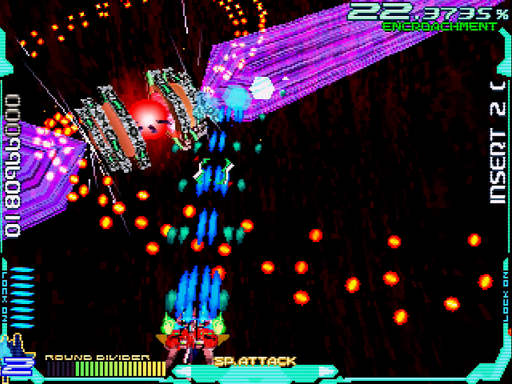
第3波はまず極太レーザーに沿って動き、手前に弾が来たら一気に右へ抜ける事で最初をやり過ごせます。続く弾は、右端に引っ張って抜けましょう。中央だとリングに接触して死ぬ事があります。
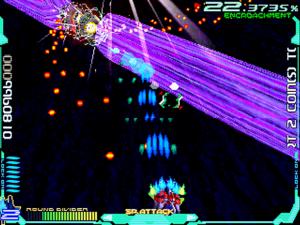infinityで一番事故りやすいのが、クリスタルレーザー。クリスタルの移動量も撃ってくるペースもランダムです。おおむね自機狙いですが、ときおり真横へ飛ばしてきます。開幕に本体へハイパーレーザー、その後ショットでいくらか破壊できます。キツかったらラウンドディバイダーを撃ってしまいましょう。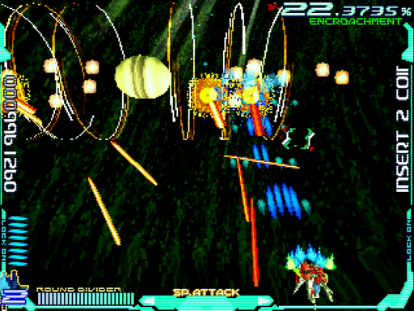
以上の流れを2セット繰り返すと、形態移行します。ここがダメージチャンスの1つなので、2セット目のクリスタルレーザーでラウンドディバイダーを撃つ場合、少し早めにしましょう。ブラックホール弾に手間取って、ハイパーレーザーのチャンスを無駄にしてしまいます。
ランク調整パターン
こちらもやる事は同じですが、やはりランクの影響が大きく出ます。画像を見れば、一目瞭然。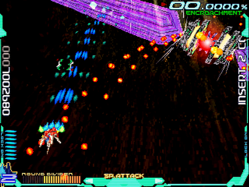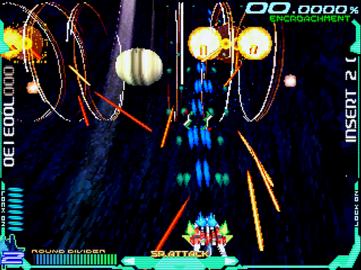
2枚目のクリスタルレーザーは画像だと分かりにくいですが、実際にやってみると長さが変わって見えます。あくまで体感的なものでしょうが、短く見えるのです。プレッシャーが減るので、ぜひとも調整して臨みたいところですね。
追記
Ray'z Arcade Chronologyで調査したところ、どうもランク170が境目らしいと判明しました。1枚目と2枚目で、弾数がハッキリ異なるのがお分かりかと思います。
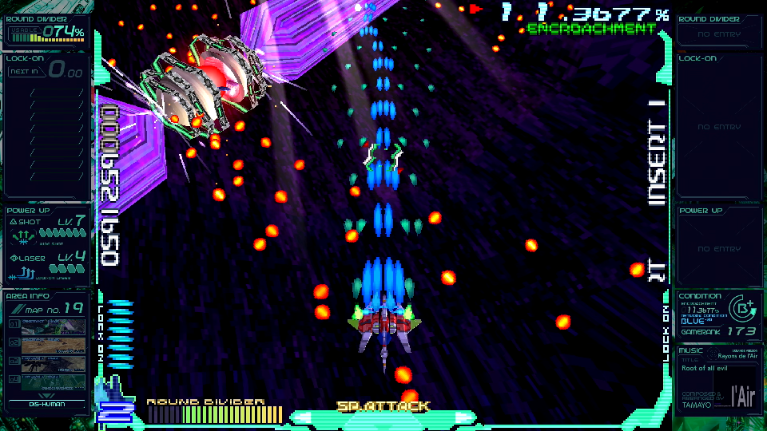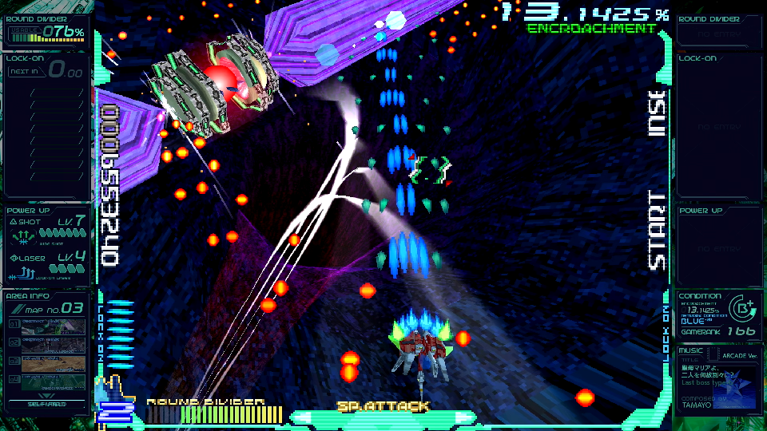
この"170"という値はけっこう絶妙で、ランク調整していてもうっかり超えてしまう事が少なくありません。マップによっては、これ以下に抑える方が難しいかも。なので、弾数の多い方もある程度は慣れておきたいですね。
第2形態
あらかじめ本体をフルロックしておき、リングが出たあたりでハイパーレーザーします。ミサイルに当たらないよう避けつつ、画像のようなフォーメーションならもう1回ハイパーレーザーしちゃいましょう。なお、ロックを吸われていないかは確認してください。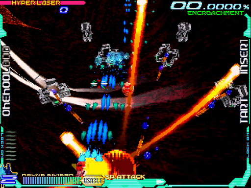
運悪く画像のフォーメーションを引いてしまった場合、無理せず横→奥と少しずつ逆L字型に動いてミサイルを避けて下さい。リングがフォーメーションを変えだしたら、すぐさま手前に戻ります。
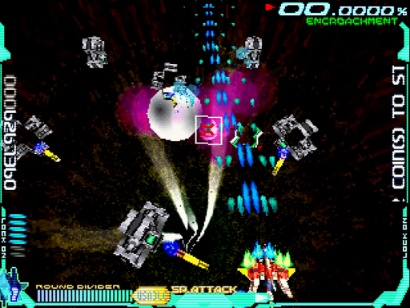上記の攻撃を2セット繰り返すと最終フォーメーションとなり、奥のリング2が回転レーザーを撃ってくるようになります。360度回転し、手前のリング1でしか防げません。つまり壊したら回避不可能。本体にハイパーレーザーをかまし、奥まで粘ってからラウンドディバイダー、が基本です。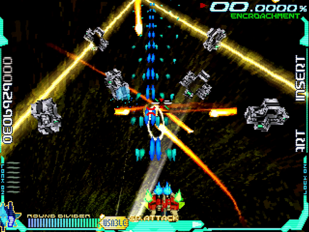
ダメージ効率(or運)が悪くて仕留めきれなかった、あるいはゲージが溜まっていなかった場合、リング1にかかったタイミングで素早く回転レーザーを抜けます。近い方はかなりシビアなので、突っ切るつもりで行きましょう。遠い方は、もう少し落ち着いて抜けられます。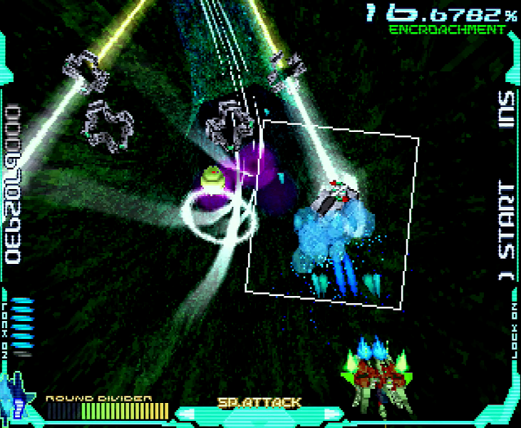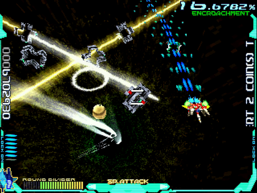
また、炸裂弾にも気を配らなくてはなりません。出る位置はこれまたランダムっぽいですが、いちおう目印はあり、画像手前のような水平に固定された光輪の位置から出てきます。見ているヒマが無いので、たいてい気が付いたら死んでいるという感じですが・・・。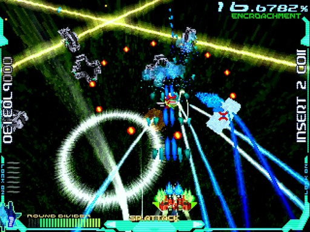
目安としてハイパーレーザー2回＋αを本体に当てていれば、ラウンドディバイダー1回で倒せます。フォーメーションの引きにもよるのですが、回転レーザーまでに2回当てる事を目標にしましょう。事故も加味するとここまでに1ミス、欲を言えばノーミスで挑みたいところです。
WR-03
この機体は、infinityに対して圧倒的に有利です。面倒なはずのクリスタルレーザーも、ホーミングミサイルのおかげでこの通り。ラッシュが来るまで、動く必要すらありません。
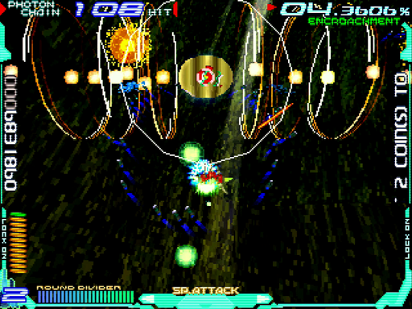最終フォーメーションについても、同じくホーミングミサイルがミサイルを相殺してくれます。画像のようなアタリフォーメーションであれば、張り付いて本体をロックし続ければ終わります。
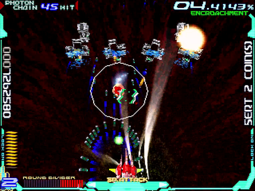という訳で、2ミスしていてもわりと余裕のある機体です。ここまでと変わらず、A・B押しっぱなしで進めば良いんじゃないかと思います。
1. あえて撃たない場合、回転速度を速めて弾の出るタイミングをずらせます。それが活きる事もままあります ↩